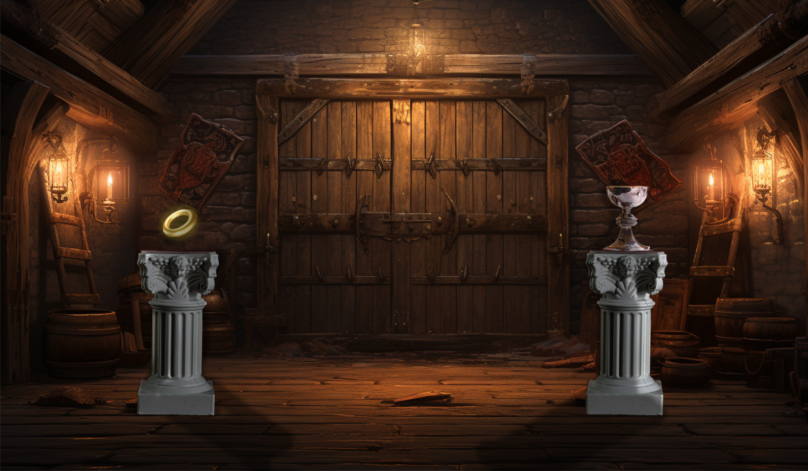

Tu découvres une autre entrée et t’aventures dans le donjon, jusqu’à ce que tu trouves la salle des trésors. Tu peux voir la relique qu'on t'as demandé de rapporter. Cependant, ton attention est troublée par une bague en or dont l’aura envoûtante te fait contester l’importance de ta quête.